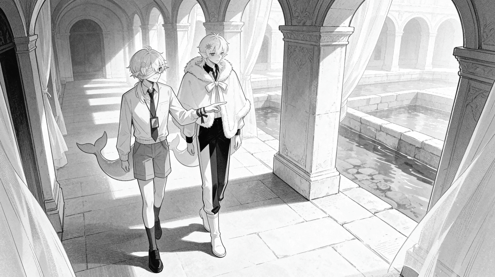
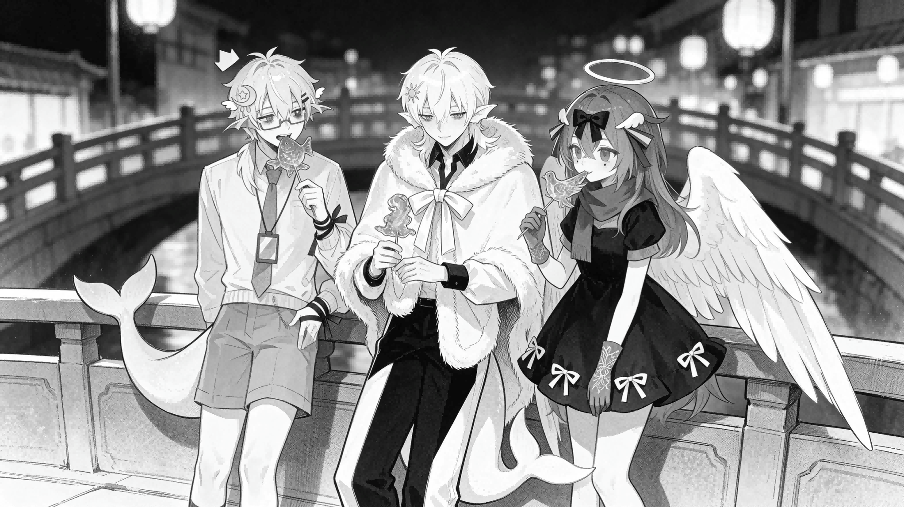

CHAPTER 04
第四卷 夜中微光
第十三章 借来的白昼
澪的身影在暗处一点点凝聚成型，先是轮廓，再是衣料，最后是那双睁开的眼睛。他站定，抬手看了看自己的掌心，像是确认自己又能动了。
渝纪站在原地，喉咙动了动，半天才问出一句：“被收回去的时候……是什么感觉？”
澪想了想，摇头：“没有感觉。”
“没有感觉？”
“就像睡着，但不做梦。”澪说得平静，“中间那一段，我既不在你身边，也不知道自己在哪儿。等你再把我唤出来，我才重新开始。”
渝纪沉默了一会儿。他原以为那只是“放回口袋”这样简单的事，没想到对澪来说，中间那段是彻底的空白。
“有件事我得跟你说清楚。”他抬起头，声音放低，“造你，是违规的。王室明令禁止这类事。”
澪看着他，没说话。
“还有，我总觉得国王那边已经不太对劲了。”渝纪的手指无意识地在袖口里攥紧，“他最近一次传诏，语气比从前冷。我没有证据，但我知道那种冷是什么味道——我在秘境里听了很久。”
他说到这儿，顿了一下，像是自己也被这句话压了一下。
“我现在可能在一个很危险的位置上。”
澪听完，往前走了半步，站到他身侧。
“那我更应该留在你能叫到的地方。”他说，“危险不危险，跟你有没有人陪着，是两件事。”
渝纪没接话，低下头去看自己的手。过了好一会儿，他才开口，语速很慢。
“我一直在想一件事。”
“你说。”
“我把你造出来之前，根本没问过你想不想。”他抬起那只灰色的眼睛，“我只是觉得孤独，只是想要一个人陪，就动手了。我甚至没考虑过，被造出来这件事，对你来说算不算一种强迫。”
他的声音开始往下沉：“万一你不愿意呢？万一你睁开眼，看见这个封闭的、灰蒙蒙的地方，心里第一件事是后悔呢？我连问都没问。”
他越说越快，像是要把积压的东西一次性倒空：“我不该——”
“渝纪。”
澪打断了他，声音不高，却很稳。
渝纪停住了。
“我很高兴。”澪说，“我睁开眼，看见的第一个东西是你，我很高兴。我能站在这里，能说话，能看见这些东西，我很高兴。”
他看着渝纪那只空过又补上的眼睛，语气缓了下来：“你不用替我后悔。我一点也不后悔。”
渝纪张了张嘴，没发出声音。
“倒是你。”澪的视线落在他眼下的青影上，“你少了一只眼睛。这种事，不是睡一觉就能长回来的。你需要好好调理，很长一段时间。”
“我知道。”
“那就去睡。”澪说，“今晚别再想这些了。你现在想的每一件事，明天想也一样能想。”
渝纪看着他，忽然觉得有点好笑，又笑不太出来。最后他点了点头，把王冠上蒙着的布巾拉正，走到床边躺下。
那一夜他睡得很沉，连梦都没有。
第二天清晨，光从高窗斜进来，落在石地上，切出一道长长的亮带。
澪站在窗边，已经等了很久。
“醒了？”他回过头，“带我看看这里吧。”
渝纪揉着额角坐起来：“这里没什么好看的。就一间屋，一条廊。”
“那就看一间屋，一条廊。”澪说得很自然，“我总得知道自己在什么地方。以后你叫我的时候，我至少清楚自己是从哪个角落出来的。”
这话听着是理由，渝纪没多想，随手抓了件外袍披上。
出了门他才发现，自己已经很久没有这样走过王宫的走廊了。秘境里没有窗，没有风，只有石台和穹顶；而这里的长廊两侧都是敞开的拱窗，风从外面吹进来，把廊上的纱幔鼓成一个个柔软的弧度。
渝纪走在前面，起初步子还是紧的。走到第三根柱子的时候，澪忽然停下，指着廊外一片浅池：“那是什么？”
“……引水渠。”渝纪也停下，“王宫的活水，从外面引进来，绕一圈再流出去。以前我路过这里，一般不看。”
“现在看看。”
渝纪顺着他的话望过去。池子里的水很浅，底下铺着青石，几尾小鱼在水草间摆尾。他盯着看了一会儿，忽然意识到自己已经站了不短的时间。
“你笑什么？”澪问。
“没有。”渝纪收回视线，可嘴角确实松了一点，“赛斯族的人看见水，会不自觉停下来。这毛病改不掉。”
“那就别改。”

他们继续往前走。渝纪说着说着，话就多了一点：那是藏书阁，顶层的窗朝西，傍晚光最好；那是观星台，羽绪那样的天空精灵大概会喜欢；那是王宫里的旧钟楼，报时的时候能听见声音穿过大半个宫城。 走到钟楼下时，渝纪停住脚步，仰头看了看。 “我小时候第一次进宫，就站在这儿听了半天。”他说，“族里的长辈催了我三次，我才走。当时觉得这声音特别大，整个天都跟着响。” “现在呢？” “现在也就那样。”他笑了笑，“但确实还挺好听的。” 澪没有立刻接话，只是站在他旁边，一起听完了那一段钟声。 渝纪自己没察觉，可他走路的姿态已经松下来了，肩膀不再端着，说话也不再一句一句往外挤。 不过在转过回廊拐角的时候，他脚步又顿了一下。 廊下远处，有两个侍从站在一起，看见他，行礼，退开。动作规矩，眼神却在他身上多停了一瞬。 渝纪收回目光，把布巾往下压了压，盖住那只灰色的眼睛。 澪看了他一眼，很自然地岔开话题：“那口钟，一天响几次？” “……按刻响。”渝纪答了一句，脚步重新迈开。 这一整天，他们就这样一座楼一座楼地看过去，走得不快，谁也没有催谁。 到了晚上，渝纪靠在廊柱上，忽然说：“要不要去城里看看？” 澪转过头。 “你说想熟悉这个地方。”渝纪解释，“王宫只是很小一块。城里的样子完全不一样。” “现在？” “现在。马车一刻钟后到宫门。” 他们往外走的时候，夜已经落下来了。宫门内的石阶被灯照得发暖，风里有远处城镇飘来的烟火气。 就在等车的工夫，一个身影从侧廊快步过来，走近了才看清——是羽绪。 她身上还穿着任务回来没换的短装，发梢有些乱，肩头落着一点尘。看见渝纪，她先是愣了一瞬，随即脸就沉了下来。 “你还有心思在这儿站着。”她开口就不客气，“你知道你干的是什么事吗？私造生灵，国法里写得清清楚楚。你就这么——” 话说到一半，她忽然注意到渝纪身边站着的那个人。 白发，白衣，安静地站在灯影里，不说话。羽绪的目光从那人脸上移到渝纪脸上，又移回去，来回两趟，剩下的话硬生生咽了回去。 “……抱歉。”她的声音低下来，手指扣了扣袖口，“我刚才话说重了。” “没关系。”澪先开了口，“你说得也没错。” “不，我……”羽绪摇了摇头，“我不该那样讲他。” 她这才认真地打量起两个人。看了一会儿，她的眉头慢慢松开，语气里带上一点说不清的意味：“你们俩……长得也太像了。” 渝纪没有回避。他示意澪往旁边站了站，把王冠、眼睛、以及那一夜的事情，从头到尾说了一遍。说到把自己的眼睛取下来的时候，他停了停，还是说完了。 羽绪听完，很久没有说话。 “所以你把自己关在那儿，一天一天地造东西，没人问你想不想继续，也没人管你累不累。”她叹了口气，“你应该早点告诉我。” “告诉你又能怎么样？” “至少能有人跟你吵一架。”她说，“你一个人待着，只会越想越歪。” 她看了看两个几乎一样的面孔，忽然换了语气：“不过你们俩站一块儿，我有点分不清。以后你们要是换身衣服，我大概得靠数眼睛。” 渝纪被这句弄得愣了一下，随即低头笑了：“他比我好看。” “我可没说。”羽绪摆手，“你今天还有事？” “没事。” “那正好。”她拍拍衣角，“我今天任务做完了，剩下的时间归我。你们不是要去城里？我跟你们一起。” 第十四章 城里的灯 城镇离王宫不远，马车走了一刻多钟，路两边就从宫墙变成了低矮的屋檐。 刚下车，声音就涌过来了。叫卖声、锅铲碰铁锅的声音、孩子的笑闹、摊子上拉长的吆喝，一层一层叠在一起，把耳朵塞得满满的。 渝纪站在车边，好半天没动。 秘境的安静太久，他一时有些不适应。澪站在他左侧半步的位置，也没有说话，只是跟他一起站着，等他适应。 “走吧。”羽绪已经往前迈了两步，回头招手，“站着看不会饱。” 街上很挤。羽绪走在最前面，熟门熟路地拐进一条窄巷，巷口有个卖热汤面的摊子，支着两口锅，白气一阵阵往上冒。 “这家的汤底熬得实在。”她挑了张桌子坐下，“任务回来我一般在这儿吃。” 三碗面上来，热气把人的脸都熏得模糊了。 渝纪吃得很慢。澪第一次拿筷子，试了两下才夹起一撮面，动作笨拙，被汤溅了一下手背，皱起眉。 “你连筷子都不会用。”羽绪看着他。 “我今天刚会走路。”澪答得很坦然。 羽绪愣了一秒，然后笑出声来，笑得桌子都跟着晃。渝纪在旁边也笑了，笑得有点无奈。 吃完面，他们顺着人流往回走。街心搭了个临时的小台子，台下围了一圈孩子，台上站着个说书的老人，正讲到兴头上。 “……那年潮水漫上来，半座城都泡在水里。后来来了个能唤水的少年，抬手一挡，水就停在半空，落不下来——” 渝纪的脚步慢了。 “——他身边还站着个有翅膀的姑娘，星子从她手里一颗一颗飞出去，亮得人睁不开眼。” 台下的孩子听得“哦”了一声，往前挤了挤。 羽绪站在人群外，脸上的表情有点复杂。她侧头看了渝纪一眼，两个人默契地都没有说话。 “这说的是你们？”澪低声问。 “传得走样了。”渝纪也压着声音，“当时根本不是那样。” “那是哪样？” “……水差点把我自己淹了。”渝纪说完，自己先觉得好笑。 台上的老人讲到一半，撑着的灯笼忽然被风吹歪，火苗斜着舔上纸壁，眼看要灭。台下孩子们一片惋惜。 羽绪抬手，指尖轻轻一扬。一点极小的星芒飞上去，稳稳托住那盏摇摇欲坠的灯笼，火苗重新立住，比原先还亮些。 孩子们“哇”了一声，全都仰起头。 老人没察觉，只当是风停了，接着往下讲。 渝纪站在旁边，看着那点星芒在灯里轻轻转了一圈，忽然觉得胸口松了一块。他侧头，发现澪正在看他。 “你在笑。”澪说。 “没有。” “有。” 渝纪没再争，抬手把被风吹到眼前的一缕发丝拨开。 往前走，街边有个卖糖画的摊子。老人用小铜勺舀了糖，在石板上勾描，一笔一笔拉出细细的线。孩子们围了一圈，盯着那只还没成型的糖鸟。 “要一只吗？”羽绪问。 “多大了还吃这个。”渝纪说。 羽绪已经把钱递过去了：“要三只。” 老人抬头：“要什么样的？” “一只鸟，一条鱼，再随便来一只。”羽绪指了指渝纪和澪，“他们两个长得一样，别弄混了。” 老人眯着眼看了两人一眼，笑着摇头：“双生子啊？少见。” 三个人谁都没纠正。 糖画做好，插在竹签上递过来。羽绪拿鸟，渝纪拿鱼，澪拿最后那只没形状的。 “这是什么？”澪举起来看了半天。 “我也没看出来。”羽绪认真地说，“大概是个糖。” 她说完自己先笑了，渝纪跟着笑，澪也笑。三个人站在摊子前，笑得不怎么体面，路过的行人还回头看了一眼。 再往前，街的尽头是条河，河上架着一座小石桥。桥上人少，晚风从水面上过来，带着一点凉。 三个人靠在桥栏上，谁也没有急着走。 “今天谢谢你。”渝纪忽然说。 羽绪侧头：“谢什么？” “你本来可以直接回宫的。” “我本来也打算回宫。”她把糖画咬掉一个角，“结果碰见你站在门口，一副心事重重的样子。” 她顿了顿，语气缓了些：“你要是下次再一个人闷着，我还是要骂你。” “知道了。” “知道了就记住。” 澪在旁边站着，一直没有多说话。他看着桥下的水，忽然开口：“这里的水会流到海里去吗？” “会。”渝纪答，“一直往南，最后都会。” “那我们以后可以去看看海吗？” 渝纪怔了一下。这句话问得很轻，也很认真。 “……可以。”他说，“等我这边的事了了。” 桥上的灯晃了一下，河面上碎成一片暖光。三个人谁都没有再说别的，就这么站着，看了一会儿水。 往回走的时候，羽绪在桥头停下，把剩下的糖画塞给澪：“拿着。你第一次出来，总得留个东西。” 澪看了看手里那支看不清形状的糖，认真地点了点头：“我会留着。” “会化的。” “那就先把形状记住。” 渝纪走在后面，看着前面两个人的背影，忽然意识到，这一整天里，自己几乎没有想起过秘境。他低头看了看手里那支鱼形的糖画，糖已经开始软了，边缘淌出一点透明的丝。 他把糖画举起来，对着灯看了一会儿，然后咬了一口。 甜的。
（未完待续）↑